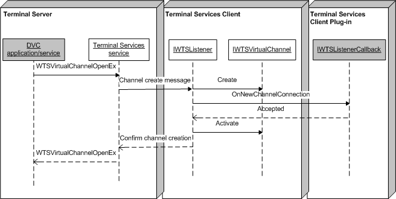

At some point in time, the dynamic virtual channel (DVC) client will request a connection to the DVC listener. When this occurs, the listener can spawn a unique communication channel to the client, which is handled by the OnNewChannelConnection method of IWTSListenerCallback. For an example, see the implementation of CDVCSamplePlugin::OnNewChannelConnection in the DVC Client Plug-in Example sample code.
The following figure shows the sequence of events for establishing a DVC connection. The shaded objects are user-supplied (DVC application/service and IWTSListenerCallback), while the un-shaded objects are part of the framework (Remote Desktop Session Host (RDÂ Session Host) service, listener, and IWTSVirtualChannel).

[!Note]
This figure assumes that a listener object has been created through a CreateListener call to IWTSVirtualChannelManager, and that the plug-in has specified IWTSListenerCallback as a parameter.
Â
Â
Â